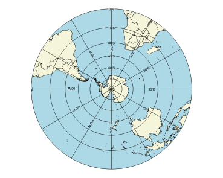

You can display map boundaries such as continents, countries, states, rivers and lakes on a map or map projection. The following examples show the basics of how to use the MAPCONTINENTS function to display these boundaries.
|  |
|
The code shown below creates the polar map shown above. You can copy the entire block and paste it into the IDL command line to run it.
ant_map = MAP('STEREOGRAPHIC', $
CENTER_LATITUDE=-90, $
CENTER_LONGITUDE=0, $
FILL_COLOR='Light Blue')
conts = MAPCONTINENTS(/COUNTRIES, FILL_COLOR='beige')
The code shown below creates the graphic shown above. You can copy the entire block and paste it into the IDL command line to run it.
; Define a map of Europe.
map = MAP('STEREOGRAPHIC', FILL_COLOR = 'Light Blue', $
LIMIT = [30.0, -15.0, 68.0, 55.0])
; Add the country outlines and fill color.
mc = MAPCONTINENTS(/COUNTRIES, FILL_COLOR='beige')
; Add the rivers.
rivers = MAPCONTINENTS(/RIVERS, COLOR='blue')